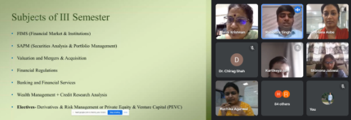
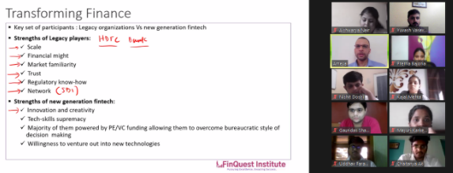
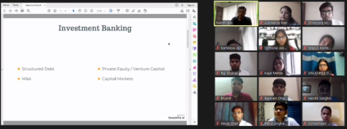
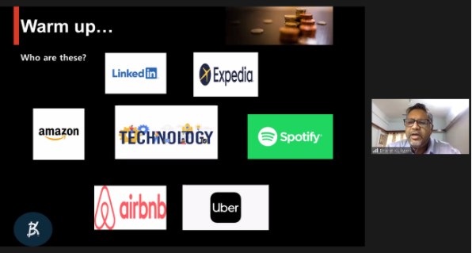

THE WORKSHOP ON VALUATION & FINANCIAL MODELLING
Ms.Prachi Ganu has conducted a 12-hour workshop on Valuation and Financial Modelling. It was conducted in two days 6-hour each day. The workshop included hands-on working on Excel to build a basic Financial Model from scratch, including Projections. Based on the projected financials, students learnt how to construct a DCF Model and arrived at the Value of the Business.
The Finance Students of Semester IV attended this workshop.
Finance Skills
Short Term Certificate Courses (STC) or Workshops
- Diving into 18+ years of Finance experience in Corporate & Investment Banking/Credit Risk, these courses are carefully crafted to provide an interactive and application-based learning environment.
- Short Term Courses are run over 5 – 10 days (20 -30 hours), while Workshops, can be 1 – 3 full days.
- Practical Case studies, where students work on live companies to hone their analytical skills.
- Hands-on experience with MS Excel to build a financial spreadsheet or PowerPoint to present their analysis.
- Fundamental /Securities Analysis – Equity and Credit perspectives
- Financial Statement Analysis – Ind AS Based (New!)
- Credit Risk Analysis & Ratings
- Valuation - Business /Equity Valuation methods
- Valuation – Financial Modelling – 3 statements / DCF
- Corporate Banking & Commercial Credit
Seminars
- Seminars are short sessions which provide a bird’s eye view of the topic covered
- Duration is approx. 4 hours
- Fundamental Analysis
- Credit Risk Analysis
- Equity Analysis
- Analysing an Annual Report – with a Live case study (IndAs Based)
- Valuation
- Corporate Banking
- Finance for non-finance students / professionals
Career Essentials
- Bringing 15+ years of recruitment & leadership experience to the classroom, these sessions are carefully designed with practical tips and actionable takeaways
- Help get students workplace ready and eventually succeed in their careers
- Most effective when conducted for small batches of upto 20 participants
- Career Options for Finance Students
- Preparing for an Interview/Group Discussions – mock interviews & GDs
- Presentation skills / public speaking – making a pitch & mock presentation
- Networking & Communication skills
- Stress management seminar
Course Offerings
Fundamental Analysis
- This session provides an overview of how to analyse a Corporate entity. It introduces a systematic analytical framework focusing on business and financial risk – delving into various related parameters. It covers industry & business analysis / ratio analysis (as used by global banks today) – to understand various aspects of the company’s business and financial strategy and its implication for various stakeholders.
- STC or Workshop will cover the above aspects in more detail and also include building of financial spreads in MS Excel. This will be supplemented with practical case studies which help reinforce concepts and learning.
Credit Risk Analysis
- This is a session covering fundamentals of Credit Risk and its significance across various investment and banking products. It also covers understanding of Credit Rating & risk management in Banks – which are the warehouses of credit risk.
- STC or Workshop will also includes fundamentals of risk ratings (PD/LGD), portfolio risk, Early Warning Signals (EWS) & Basel Norms. It will include practical mini case studies which help reinforce concepts and learning.
Equity Analysis & Valuation
- This session focuses on the fundamental analysis of a corporate from an equity investor perspective. It covers a broad overview of macroeconomic factors, industry, business & financial analysis from the perspective of an equity investor. The seminar includes discussion on important valuation parameters.
- STC or Workshop will cover the above aspects in depth and will include practical mini case studies covering relative valuation methods, impact of corporate actions, and discussion of actual market Broker Reports.
Financial Modelling & Valuation
- This session provides an overview of the intrinsic Valuation of a business using the Discounted Cashflow (DCF) Approach. The workshop will include hands on working on Excel to build a basic Financial Model based on Projections. Based on the projected financials, students will learn how to construct a Cashflow Model and arrive at the Value of the Business. We will go over concepts of WACC/ Terminal growth and also build in a sensitivity analysis.
- STC or Workshop will include hands on working on Excel to build a basic Financial Model and the DCF valuation. Can also share a live case study if time permits from a Brokerage Report.
Corporate Banking & Commercial Credit
- This session provides an overview of various aspects of Corporate Banking, including various banking products, related documentation, loan approval cycle in a bank, loan monitoring, early warning signals and aspects of relationship management. It covers various aspects of term loans, working capital, trade products as well as hedging solutions that Banks offer.
- STC or Workshop will cover the above aspects in depth and include case studies to cover a brief credit appraisal and insights into credit ratings.
Indian Bankruptcy Code
This session covers the most widely discussed bad debts problem and the newly introduced Indian Bankruptcy Code. The session not only covers various aspects of the IBC, but also discusses underlying concepts on winding up / liquidation and selling off as a going concern. The session also includes a brief discussion on related valuation concepts.
Other Finance Areas / Corporate Finance / Asset Pricing etc..
- Tailor made trainings depending on the audience, duration and content can also be delivered.
- Preparation for any related Certifications can also be covered.
TRANSITION PROGRAM – FINANCE
The objective of the Transition Program was to offer the students stepping into the second year of the PGDM program to transit from the core courses conducted in the first year to specialization courses of the second year. It offered the students an opportunity to obtain focused inputs in their area of specialization.
The duration of the Transition Program was about 10 days and was conducted just before the commencement of the classes of the third semester.
The faculty members offered a snapshot of the various courses to be offered in the third semester. Students were made aware of the pre-requisites for each course.

Mr. Vishal Bhojani, Director & Chief Mentor – Magic Institute of Excellence, shared the importance of networking and people skills, analytical and creative skills, sales and communication skills even in the field of finance.
A series of guest lecture was conducted where industry professionals and experts were invited to address the students on the latest trends and emerging areas.
The guest session series started with a very lively session on Indian and Global debt market by Ms. Lakshmi Iyer, President & CIO – Fixed income & Head - Products Kotak Mahindra AMC.
Mr. Abhyankar, founder of FinQuest, focussed his discussion on transition from traditional finance to financial analytics. He gave great insights on Financial Analytics and discussed innovations in finance. He familiarised the students with open source systems like Python and R and helped the students to build an options pricing program on Google Colab.

Mr. Abasaheb Chavan, a professional banker, introduced the concepts of trade, its evolution and regulatory body in India and abroad. He explained the role of FEMA in detail highlighting the impact on MSMEs as well.
Prof. Tarun Kehair, well known for his subject expertise in the areas of Mergers & Acquisitions, Corporate Finance, Strategic Financial Management, Accounting and more, conducted live modelling examples for M&A and valuation. Mr. Vikram Sheth gave insights on how funding happens in PEVC and how to value the same.
Mr. Nilesh Jain, partner with an investment banking firm, discussed live industrial cases of NBFC’s, mergers & acquisitions, private equity funds, venture capital, hedge funds giving an insight on the reality in the markets.

Mr. Bharat Kulkarni, State President at CIIMSME, discussed the current trends in fintech industry and strategies adopted by fintech unicorns such as Paytm, Zerodha, PolicyBazar, Billdest and manymore.

HDFC mutual funds also conducted a campus to corporate program for the students as a part of the transition program. The knowledge shared by the speakers on capital markets had set a strong base for the students. The students were briefed on verbal and non-verbal communication skills.
The sessions were highly interactive and the students participated enthusiastically. The session ended with vote of thanks. The guest speakers were presented with a sapling certificate and honorarium.
Outcome
After the completion of the Transition Program, the students were able to:
- Choose appropriate electives based on the information provided.
- Understand the current trends in the industry.
- Assess the career opportunities under various verticals.
- Acquire skills in specific domain and cross –functional areas.